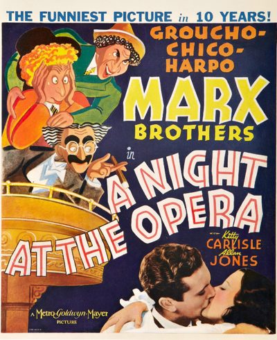

A Night at the Opera

Starring: Groucho Marx, Chico Marx, Harpo Marx
Director: Sam Wood
Writer: George S. Kaufman, Morrie Ryskind, Al Boasberg
Producer: Irving Thalberg
A Night at the Opera is a 1935 American comedy film starring the Marx Brothers (Groucho, Harpo and Chico), and featuring Kitty Carlisle, Allan Jones, Margaret Dumont, Sig Ruman, and Walter Woolf King. It was the first of five films the Marx Brothers made under contract for Metro-Goldwyn-Mayer after their departure from Paramount Pictures, and the first after Zeppo left the act.
Trivia
- In their Paramount films, the brothers' characters were much more anarchic: they attacked almost anybody who was so unfortunate as to cross their paths whether they deserved it or not, albeit comically.
- Thalberg, however, felt that this made the brothers unsympathetic, particularly to female filmgoers.
- So in the MGM films, the brothers were recast as more helpful characters, saving most of their comic attacks for the villains.
Previous Showings
12 Runs • 6 Festivals
11,390 tickets sold
Original Billings: 1 run (December 15, 1935)
Original Run: December 15, 1935 (Sunday - Tuesday)
All runs on record (12):
- December 15, 1935 (Sunday - Tuesday)Marx Brothers
- April 25 - 26, 1990 · 1,022 ticketsw/ Duck Soup
- July 15 - 22, 1993 · 2,317 ticketsw/ Duck Soup
- September 27 - 29, 1996 · 1,298 ticketsw/ Duck Soup
- April 7 - 9, 2002Fall Folliesw/ Unfaithfully Yours
- November 6 - 8, 2002 · 918 ticketsw/ Unfaithfully Yours
- December 13 - 14, 2003 · 585 ticketsSatyajit Ray Film Festivalw/ Hirak Rajar Deshe (The Kingdom of Diamonds)
- March 11 - 13, 2005 · 1,587 ticketsw/ Unfaithfully Yours
- August 11 - 13, 2009 · 832 ticketsSummer 2009w/ The Merry Widow
- February 7 - 9, 2012 · 500 ticketsWinter 2012w/ Camille
- December 19 - 22, 2013 · 1,220 ticketsPreston Sturges and The Marx Brosw/ The Palm Beach Story
- November 18 - 20, 2016 · 1,111 ticketsAstaire and Rogers plus The Marx Brothersw/ Top Hat